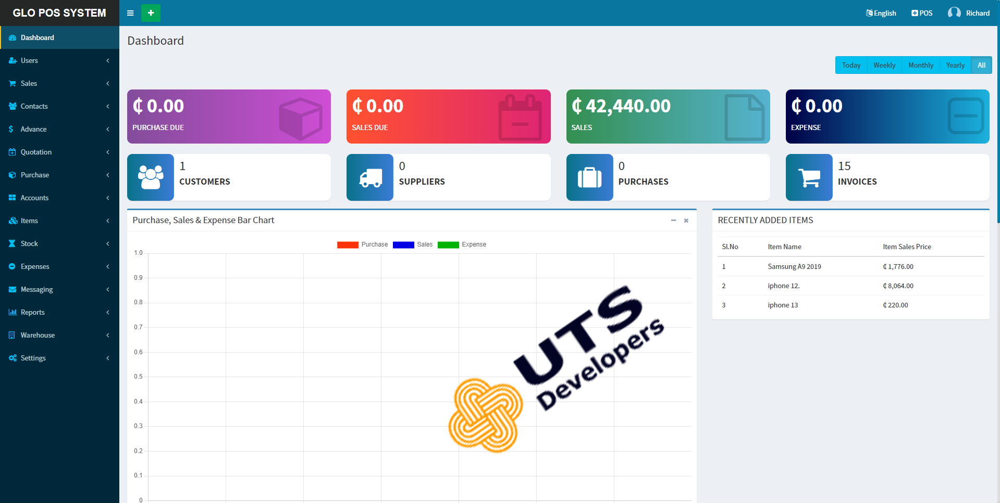

GLO Hospital Management System
Improving patient care
GLO HMS empowers healthcare professionals streamline hospital operations to improve patient care.
Saving more lives !

ABOUT GLO Hospital Management System
GLO Hospital Management System (HMS) is a robust, web-based solution designed to optimize every aspect of hospital operations. With an intuitive interface and powerful modules, GLO HMS helps healthcare providers deliver efficient, high-quality patient care while streamlining administrative tasks.
The system enables seamless management of patient records, appointments, admissions, discharges, and transfers. Doctors and nurses can easily access medical histories, treatment plans, and diagnostic results, ensuring informed decision-making and continuity of care.
The system is built with security and compliance in mind, safeguarding sensitive patient data and supporting regulatory requirements.
Whether you run a small clinic or a large hospital, GLO HMS adapts to your needs, helping you improve operational efficiency, reduce errors, and focus on what matters most—patient health and satisfaction.
Watch Our Demo
Installation Type
GLO-POS with Inventory Management can be installed in two modes to suit your business needs:
Online Installation
Access the system from anywhere, manage data in real-time, and benefit from automatic updates and cloud backups.
Offline Installation
Ideal for businesses with limited internet connectivity. All features are available locally, and data is stored securely on your premises.